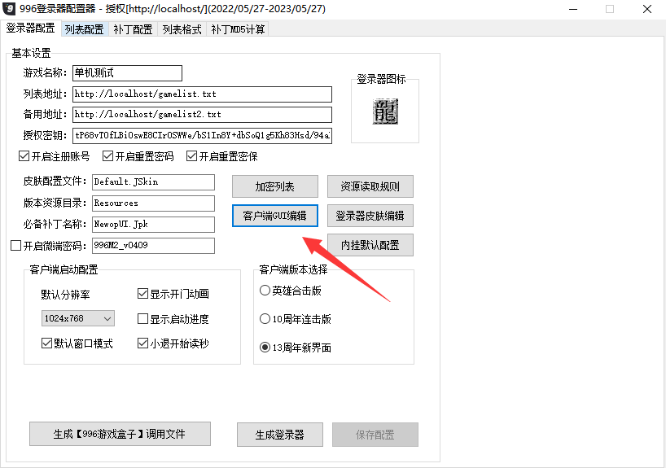
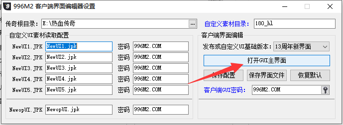
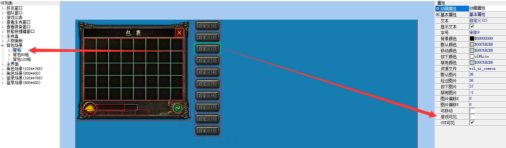

包裹按钮自定义按钮触发
共5个按钮
在脚本QFunction-0.txt里触发
[@ItemBagButtonClickX] X范围在1-5
[@ItemBagButtonClick1]
[@ItemBagButtonClick2]
[@ItemBagButtonClick3]
[@ItemBagButtonClick4]
[@ItemBagButtonClick5]
可以使用脚本命令SETITEMBAGBUTTONINFO来动态调整按钮的位置，或是否显示某个按钮。
命令格式 SETITEMBAGBUTTONINFO 按钮编号(1~5) 是否可见(0不可见,1可见) 坐标X 坐标Y 提示信息
使用方法：
首先启动“996登录器生成器.exe”双击登录器参数列表
点击客户端GUI编辑-打开GUI主界面
然后找到背包场景，鼠标点一下背包窗口，背包窗口右边会出现自定义(0~9)10个按钮 ，
这10个按钮点击会分别触发QF的[@ItemBagButtonClickX]，默认是隐藏的，不显示的。
鼠标选择其中一个按钮，比如点击自定义(0)，然后在右边的图片窗口置素材
在右边的窗口基本属性里-游戏可见勾选。就可以显示按钮，这一步可以省略。可以使用脚本命令SETITEMBAGBUTTONINFO设置。


